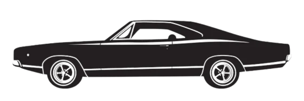

Av Peşinde
4 vaka. 4 canavar. 1 avcı.
Mekanları incele, ipuçlarını topla, günlükten canavarı bul ve doğru silahı seç.
Ormanda kampcılar kayboluyor...
Wendigo'yu yendin!

Sen sadece buradaki canavarları avlamadın benim küçük kalbimi de avladın :)
— Gerçek bir avcı: Azra ⛤